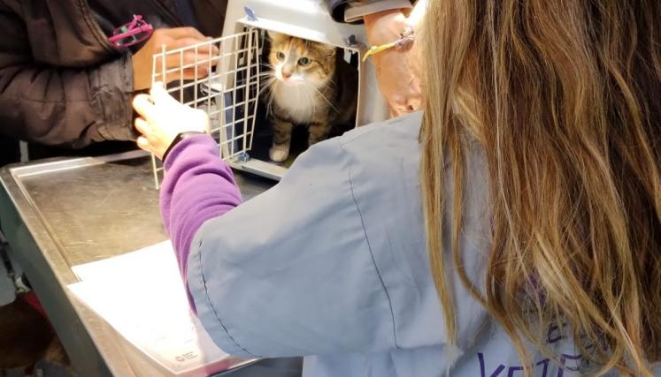
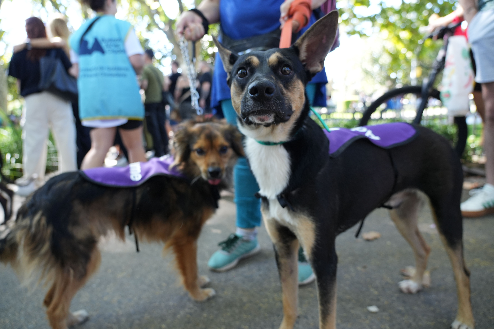
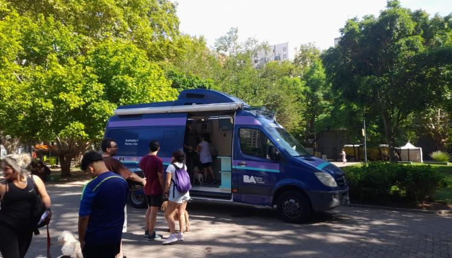

Castración y vacunación antirrábica gratuita en Buenos Aires
Los operativos, destinados a perros y gatos, se realizan a través de los Centros Fijos y Unidades Móviles Veterinarias.

El servicio de Atenciones Veterinarias continúa trabajando de manera ininterrumpida durante los meses de verano. En este marco, la Dirección General de Sanidad y Cuidado Responsable de Caninos y Felinos Domésticos, que tiene como objetivo proporcionar las herramientas necesarias para lograr el bienestar de perros y gatos, así como también contribuir con la convivencia armónica y responsable de los animales domésticos en el espacio público, realiza operativos de castración y vacunación antirrábica gratuitos para perros y gatos en todas las comunas de la Ciudad de Buenos Aires.
Los operativos se realizan según el cronograma semanal, a través de ocho móviles veterinarios que recorren las 15 Comunas de la Ciudad y los dos centros fijos de atención veterinaria y castración que funcionan en el Parque Indoamericano en Villa Soldati (Av. Escalada y Paseo Islas Malvinas) y en Costanera Sur (Av. Dr. T. Achaval Rodriguez 1550), frente a la fuente de Lola Mora.
¿Cómo acceder a los servicios? Si querés vacunar a tu perro/a o gato/a contra la rabia o solicitar un turno para su castración, consultá el cronograma que se publica semanalmente en las redes sociales de Animales BA: Perros y gatos o en la página web para conocer las próximas fechas y ubicaciones programadas.
Recordá que para la castración es necesario solicitar un turno previo de manera online. Allí, deberás registrarte con tu cuenta de miBA, ingresando en la opción correspondiente al animal y completando el formulario. Una vez confirmada la operación, recibirás en tu mail la confirmación del turno con toda la información necesaria para el día de la cirugía.
Para vacunación antirrábica podés acercarte con tu perro o gato sin turno previo, en las fechas, lugares y horarios que figuran en el calendario.

¿Cuáles son los requisitos para castrar a mi perro o gato? Para poder realizar la cirugía, el animal debe gozar de buena salud y tener más de 6 meses de edad. El día del turno, los veterinarios realizarán un examen clínico preoperatorio y, si se encuentra apto para la cirugía, se realizará la castración. Es importante notificar al veterinario si el animal toma alguna medicación o si tiene alguna enfermedad. También podés llevar estudios previos para que los vea el veterinario al momento de la revisión.
Información importante: El día del turno, el animal deberá concurrir en ayunas (12 horas sin alimento y 8 horas sin líquidos). Además, los animales deberán asistir con collar o pretal, con chapita identificatoria, correa y bozal si es un perro, o en una transportadora si es un gato. La persona que lo acompañe, debe ser mayor de 18 años, tendrá que quedarse en el lugar hasta que finalice el procedimiento y llevar una manta para envolver al animal luego de la cirugía.

← Volver a Noticias